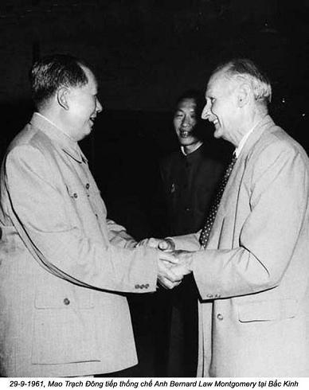

Chương 50

ăm 1962, một bước ngoặt về chính trị đối với Mao. Vào tháng giêng, khi ông triệu tập hội nghị mở rộng của Ban chấp hành Trung ương đảng thảo luận, nạn khủng hoảng vẫn tiếp diễn, cũng chính là lúc lòng ngưỡng mộ của mọi người đối với Mao đã xuống đến điểm thấp nhất. Bảy nghìn cán bộ tham dự cuộc họp này, gồm các cán bộ đảng, sĩ quan quân đội từ các vùng, các tỉnh, các thành phố, các quận, các huyện, đồng thời cả những giám đốc của các ngành công nghiệp và khai thác mỏ đến dự cuộc họp mặt lịch sử của một hội nghị gồm bảy nghìn cán bộ đảng viên trong cả nước. Đa số thành viên dự cuộc họp không thuộc hàng ngũ lãnh đạo cao cấp của đảng, những người không thể quyết định chính sách nhà nước bằng ý kiến của mình, nhưng là người chịu trách nhiệm triển khai mệnh lệnh từ trên xuống trong từng lĩnh vực riêng. Ở Bắc Kinh họ được ưu đãi đặc biệt, được ở trong những khách sạn sang trọng và tối nào cũng có thể tiêu khiển một cách thoải mái. Ban lãnh đạo cần sự ủng hộ của họ.
Lưu Thiếu Kỳ chủ trì cuộc họp, nhưng ông tham khảo ý kiến Mao để viết bài diễn văn cho hội nghị Bẩy ngàn cán bộ đảng viên. Mao bảo, ông không muốn đọc trước bài diễn văn, nhưng hội nghị phải được diễn ra trên tinh thần “dân chủ”, phải khuyến khích đại biểu phát biểu ý kiến riêng của mình, và Lưu có thể xem xét, bổ xung bản thảo cho bài diễn văn trên tinh thần đóng góp cho việc thảo luận.
Vì Mao không đóng góp ý cho bài diễm văn của Lưu, vả lại Lưu không chấp nhận ý kiến của Mao bào chữa, tình trạng kinh tế tồi tệ hiện nay trong nước do thiên tai gây nên. Lưu tuyên bố trong Đại lễ đường nhân dân:
- Thiên tai chỉ xảy ra ở một vùng của đất nước. Ngược lại, những tai hoạ do con người gây nên đã tàn phá toàn bộ đất nước Trung Hoa. Chúng ta không bao giờ được quên bài học này.
Lưu Thiếu Kỳ đề nghị phục chức cho những cán bộ bị sa thải vì họ đã chống lại “chính sách phiêu lưu mạo hiểm tả khuynh” của Đại nhảy vọt, phục chức cho những cán bộ địa phương đã từng ủng hộ ý kiến của Bành Đức Hoài.
Tôi biết Mao nổi xung. Ngay sau cuộc họp, ông phàn nàn:
- Lưu Thiếu Kỳ đã đi chệch khỏi lập trường đấu tranh giai cấp. Đồng chí ấy không đặt ra câu hỏi chúng ta đi theo con đường xã hội chủ nghĩa hay tư bản chủ nghĩa. Thay vào đó, đồng chí lại so sánh thiên tai với những hỗn loạn do con người gây nên. Theo tôi sự phát biểu nhảm nhí này mới thực là một tai hoạ.
Nhưng đa số những người dự họp đều đồng tình với đánh giá của Lưu Thiếu Kỳ. Sự chia rẽ mất đoàn kết trong đảng trở nên tồi tệ. Tình hình Trung Quốc lúc bấy giờ ảm đạm đến nỗi trong cả những vấn đề thuộc về chính sách quan trọng, phải chật vật lắm người ta mới đi đến được sự thống nhất về quan điểm. Vì vậy hội nghị phải kéo dài hơn một tháng. Các cán bộ địa phương thi nhau than phiền về những khó khăn đang gặp phải, về chính sách đã đưa đất nước đến tình trạng như hiện nay.
Hội nghị lần này như một liều thuốc tẩy. Như thường lệ. Mao rất ít khi tham dự các phiên họp của hội nghị. Trong khi tất cả đại biểu dự hội nghị khắp nơi phát biểu sôi nổi, đưa ra những lời than phiền những sai lầm của cấp trên. Còn Mao, phần lớn thời gian ông nằm trên chiếc giường ngoại cỡ trong “Phòng 118” của Đại lễ đường nhân dân. Ông “nghỉ ngơi” với các tì thiếp trẻ, đọc các báo cáo về những phiên họp, mặc dù hội nghị diễn ra ngay trong toà nhà ông đang ở.
Với sự vắng mặt của Mao, các cán bộ nòng cốt cấp dưới, rốt cuộc, đã có thể chôn vùi tham vọng quá lố của kế hoạch Đại nhảy vọt, chống chọi với thực tế tình trạng kinh tế suy sụp mà không bị Mao cản trở. Trong thời kỳ Đại nhảy vọt, những cán bộ này đã phải chịu đựng một sức ép rất lớn. Khẩu hiệu: “Nhanh, nhiều, tốt, rẻ” đã thúc bách họ phải đưa ra những chỉ tiêu sản xuất vô lý. Họ đứng trước nguy cơ bị chụp mũ hữu khuynh hoặc có thể còn tệ hơn nữa, thậm chí bị mất việc nếu họ giảm chỉ tiêu sản xuất hoặc không hoàn thành định mức mà họ tự đề ra. Cuộc hội nghị của bảy nghìn cán bộ đã tạo cho họ cơ hội khiếu nại về tất cả mọi vấn đề đổi với ban lãnh đạo đảng.
Những khiếu nại đó không bao giờ trực tiếp công kích Mao, chỉ chống lại đường lối Đại nhảy vọt. Tuy nhiên, ai cũng biết, Mao người chịu trách nhiệm về chính sách này. Chỉ trích chính sách này, tức là chỉ trích Mao.
Mao tức giận khi đọc những báo cáo hàng ngày về sự chỉ trích. Ông nói với tôi:
- Suốt ngày họ chỉ biết than vãn, tối đến họ lại đi xem kịch. Ngày nào họ cũng ăn ba bữa …. và đánh rắm. Chủ nghĩa Marx-Lenin của họ như thế à?
Chỉ vì theo nghi thức phải túc trực 24/24 nên tôi phải sống một tháng trời chán ngán, đi đi lại trong hành lang Đại lễ đường, phải nghe những lời đàm tiếu, đọc tài liệu sát ngay phòng của Mao.
Trong khi sự chỉ trích vẫn kéo dài, cuối cùng Mao đành nhận một cái lỗi nào đó đối với cuộc khủng hoảng. Theo tôi biết, chưa có ai yêu cầu Mao tự phê bình bao giờ. Việc tự phê bình chẳng qua chỉ là một phần trong chiến lược của Mao.

Mao rất ghét phải nhận sai lầm. Năm 1960, trong một buổi nói chuyện với Thống chế quân đội Anh, Montgomery, tôi đã nghe thấy Mao thú nhận “đã làm rất nhiều điều dại dột, phạm rất nhiều sai lầm”, nhưng đối với các cán bộ cao cấp của đảng và nhân dân Trung Quốc, về mặt tâm lý, ông không muốn thú nhận rằng tình trạng thảm hại của đất nước có liên quan đến ông. Lần này là lần đầu tiên Mao tự kiểm điểm kể từ khi nắm quyền hành từ năm 1949, trong bài phát biểu ngày 30-1-1962: “Tôi phải chịu trách nhiệm về tất cả những sai lầm do các cơ quan trung ương trực tiếp hay gián tiếp gây ra, bởi vì tôi là Chủ tịch của các cơ quan trung ương”. Nhưng Mao không bao giờ nói cụ thể sai lầm ở chỗ nào, mà ông phản công lại một cách nhanh chóng bằng cách quy trách nhiệm cho những người khác. Sau đó ông chỉ trích cái cơ chế mang tính chất khoán tới hộ lao động là thành phần kinh tế tư nhân.
Tôi tin chắc rằng, thực ra Mao không hề cho ông đã phạm sai lầm. Nhưng mối lo ngại bị mất sự kiểm soát đối với bộ máy đảng trên toàn quốc của ông ngày càng lộ rõ. Ông muốn là trung tâm để dân chúng quây quanh, cho dù có lui xuống hàng thứ hai. Mao đã cho Lưu Thiếu Kỳ đảm nhiệm chức Chủ tịch nước để kiểm tra lòng trung thành của ông ta và trong thời gian diễn ra Hội nghị bảy nghìn cán bộ, Mao đi đến kết luận, tất cả những chuyện Lưu làm đều đi ngược lại với lòng trung thành đối với ông. Một nước có 2 chủ tịch, 2 trung ương, 2 trung tâm điều ấy Mao không bao giờ chấp nhận. Vậy ông đứng ra “chịu trách nhiệm” đối với những khủng hoảng để giữ vững vị trí của ông ở trung ương, chứ không phải vì ông thành khẩn nhận sai lầm.
Lâm Bưu, một người mồm mép, lanh lợi nhất trong đám thuộc hạ thân tín còn lại của Mao. Mao vừa dứt lời, ông ta đã lên phát biểu: “Tư tưởng của Mao chủ tịch luôn luôn đúng đắn. Nếu chúng ta gặp phải khó khăn hay một vấn đề nào đó, điều đó có nghĩa, chúng ta đã không thực hiện đúng chỉ thị, không làm theo những lời căn dặn của Chủ tịch, hoặc đã đi chệch hướng”.
Trong khi Lâm Bưu nói, tôi ngồi ngay sau diễn đàn, phía sau bức rèm cửa. Mao sau này nói với tôi:
- Bài phát biểu của phó chủ tịch Lâm thật hay. Những lời nói của đồng chí Lâm Bưu lúc nào cũng rõ ràng, đầy sức thuyết phục. Tại sao các cán bộ lãnh đạo khác của đảng không thể phát biểu như vậy?
Ít ra, bây giờ tôi đã có thể kết luận, việc Mao tự phê bình chỉ là thủ đoạn, không bao giờ nghĩ ông phạm sai lầm. Nhưng chắc chắn việc Lâm Bưu bảo vệ Mao có hàm chứa một ý đồ không sạch sẽ gì cho lắm. Lâm Bưu từ lâu không giữ trọng trách trong chính phủ, lời phát biểu của Lâm không thật lòng. Bởi vì hầu hết những nhà lãnh đạo đảng đều bất mãn với kế hoạch Đại nhẩy vọt, riêng Lâm Bưu lại không nói ra.
Hoa Quốc Phong, cựu bí thư huyện uỷ Tương Đàm, thuộc tỉnh Hồ Nam, quê Mao, tôi gặp lần đầu tiên vào năm 1959, lại có vẻ thực lòng, ít nịnh nọt hơn Lâm, nhưng cũng như Lâm, Hoa không chỉ trích Mao, khiến Mao đánh giá tốt về ông. Cũng như năm ngoái, Hoa phát biểu trước hội nghị, lại một lần nữa nói lên sự thật: “Sau những nỗ lực của chúng ta trong thời gian từ năm 1958, 1959 và 1960, con người cũng như trâu bò và cả đất nước đều khánh kiệt. Chúng ta không còn đủ sức cho những bước tiếp theo”. Vừa nói, Hoa vừa hướng về phía Mao một cách thành kính: “Nếu chúng ta muốn khắc phục được những khó khăn ở các vùng nông thôn, chúng ta phải cương quyết đi theo con đường xã hội chủ nghĩa, chúng ta không được phép chấp nhận cơ chế khoán tới từng nông hộ và một nền nông nghiệp không bao cấp. Nếu không, chúng ta sẽ đâm đầu vào ngõ cụt”.
Sau Hội nghị tháng 1 năm 1962. Mao nói: “Hoa Quốc Phong là người trung thực. Đồng chí ấy còn hơn nhiều người lãnh đạo nhà nước hiện nay của chúng ta”. Sau khi Chu Tiểu Châu và các đàn em của ông ở Hồ Nam thất sủng, Trương Bình Hoa được bổ nhiệm làm bí thư thứ nhất của tỉnh. Một số chức vụ trong bộ máy tỉnh còn trống, thế là Hoa Quốc Phong được cử làm Trưởng ban bí thư tỉnh, phụ trách các công việc thường vụ ở Hồ Nam.
Sau Hội nghị bảy nghìn cán bộ, việc bài xích kế hoạch Đại nhảy vọt càng tăng lên. Cả những thế lực ly gián cũng tăng theo, đảng có nguy cơ bị chia rẽ. Đảng và nhà nước thoát dần sự phụ thuộc vào Mao ngày một tăng. Các công xã nhân dân cuối cùng được cải tổ lại thành những đơn vị nhỏ hơn, dễ kiểm soát hơn, trở lại thời kỳ hợp tác xã của năm 1956. Định mức sản xuât công nghiệp được giảm xuổng. Toàn bộ nền kinh tế đang chuyển mình, người ta vẫn nếp tục lên án thái độ thiên tả của kế hoạch Đại nhảy vọt.
Vào tháng hai và tháng ba, Uỷ ban Khoa học và Công nghiệp nhà nước tổ chức hội nghị tại Quảng Châu. Thậm chí người ta còn định phục hồi danh dự cho những trí thức, mặc dù thừa biết Mao rất ác cảm với họ. Các nhà khoa học, các nhân sĩ trí thức của Trung Quốc vẫn chưa hoàn hồn bởi chiến dịch chống hữu khuynh hồi năm 1957. Trong chiến dịch đó, hàng trăm nghìn người bị sa thải, bị giáng chức hoặc bị đưa đi cải tạo lao động. Còn những người không bị truy bức về chính trị, lúc nào cũng sống trong lo sợ, không dám hé miệng.
Bây giờ phó thủ tướng Trần Nghị lại nhấn mạnh ý kiến khác trong bài phát biểu trong Hội nghị khoa học và kỹ thuật: “Có một số vấn đề nhiều người không dám nói, nhưng tôi sẽ nói”. Trần Nghị động viên giới trí thức. “Đất nước Trung Hoa cần những nhà khoa học, nhân sĩ trí thức, nhưng trong những năm qua, họ đã bị ngược đãi. Bây giờ chúng ta phải sắp xếp cho họ trở lại đúng vị trí”. Lời nói của Trần Nghị xúc phạm trực tiếp tới Mao, nhưng đối với giới trí thức lại là một niềm hy vọng sẽ được trọng dụng, được người ta đánh giá đúng khả năng của họ.
Cũng tại hội nghị này, diễn văn của Chu Ân Lai đưa ra những vấn đề chủ yếu. Bài diễn văn “Về vấn đề của những người trí thức” cũng có chiều hướng chống lại những xu thế thù nghịch với trí thức kể từ chiến dịch chống hữu khuynh. Chu Ân Lai tuyên bố với các thính giả, ở nước Trung Hoa xã hội chủ nghĩa đại đa số những người nhân sĩ trí thức được xếp vào giai cấp công nhân, do đó họ cũng được coi là những người bạn của chủ nghĩa xã hội. “Bài trừ mê tín” không đồng nghĩa với “bài trừ khoa học”. Trái lại, để bài trừ mê tín dị đoan, người ta phải nhờ vào những nhà khoa học. Ông kêu gọi nhân sĩ trí thức hãy tích cực và hết lòng đóng góp vào công cuộc phát triển đất nước.
Các nhà khoa học, nhân sĩ trí thức cũng cảm thấy thoả mãn về cuộc hội nghị này, hệt như những cán bộ địa phương đã hài lòng với Hội nghị bảy nghìn cán bộ. Những lời ngon ngọt của đã an ủi được họ. Tất cả những bài phát biểu của họ đều tỏ ra biết ơn những cố gắng của đảng. Đặc biệt, những người “hữu khuynh” rất phấn khích, bởi vì họ hy vọng con dấu thiên hữu đang đóng trên người sắp sửa mất đi, họ sẽ lại được thu xếp vào một vị trí xứng đáng nào đó.
Cũng như các thính giả của mình, Chu Ân Lai thừa biết, năm 1957 Mao đã công kích tầng lóp nhân sĩ trí thức, kêu gọi công nhân và nông dân hãy bài trừ thói mê tín dị đoan. Nếu không có sự đồng ý của Mao, Chu sẽ chẳng dám cả gan phát biểu như vậy.
Tuy vậy, khi đọc biên bản, Mao vẫn tỏ ra không hài lòng về Hội nghị. Một buổi tối. Mao hỏi tôi với một giọng châm biếm:
- Tôi rất muốn biết tầng lớp nào đã làm nên lịch sử? Công nhân, nông dân và nhân dân lao động hay tầng lớp nào khác?
Mao luôn cho rằng, làm nên lịch sử là công nhân và nông dân chứ không phải tầng lớp nhân sĩ trí thức. Những cuộc khởi nghĩa của nông dân là sức mạnh chủ lực của lịch sử Trung Quốc.
Ngay sau Hội nghị, với thái độ tự do, hoà giải hơn của Chu Ân Lai. Mao quyết định triệu tập hội nghị tiếp theo, lần này ít công khai hơn, để xác định vị trí của tầng lớp nhân sĩ trí thức trong xã hội Trung Quốc. Bởi vì ông không thể thực hiện được ý muốn qua những cửa ải quan liêu được nữa, nên từ sau hậu trường, cố gắng tập hợp vây cánh triển khai chiến thuật, tìm kiếm sự ủng hộ những cuộc phản công trong tương lai, một cách âm thầm và bí mật. Ông bắt đầu quy tụ các tay chân. Một trong số họ là Trần Bá Đạt, người đứng đầu các bí thư chính trị của Mao, kiêm Tổng biên tập tạp chí Hồng Kỳ, cơ quan lý luận của đảng. Theo đánh giá của Mao, Trần Bá Đạt, nhà lý luận xuất sắc nhất của đảng về chủ nghĩa Marx-Lenin. Ông thường nói: “Không có lý luận, không có cuộc cách mạng nào thành công được. Trần Bá Đạt, một lý luận gia quý hiếm của đảng ta”.
Trần Bá Đạt không phải lý luận gia, nhưng ông đã có những bài phân tích, đánh giá, ca ngợi Đại nhẩy vọt một cách sâu sắc. Trích lời Marx, “Một ngày sống trong chủ nghĩa cộng sản bằng 20 năm dưới chế độ tư bản”. Trần Bá Đạt quả quyết coi Đại nhẩy vọt như buổi bình minh của chủ nghĩa cộng sản Trung Hoa. Trần thúc giục tiến nhanh, tiến mạnh ông cho rằng công việc mà Trung Quốc hoàn thành trong một ngày thì các nước tư bản phải mất hai mươi năm. Trung Quốc đã đổi thay. Chủ nghĩa cộng sản bước sang bước ngoặt lịch sử mới.
Hai năm sau, khi phải đối đầu với nạn đói do kế hoạch Đại nhảy vọt gây ra, Trần Bá Đạt thản nhiên đối với hàng triệu người đã chết, ông quả quyết: “Đó là một hiện tượng phụ tất yếu trong quá trình đi lên của chúng ta”. Cũng chẳng có gì lạ, khi Mao đánh giá cao Trần Bá Đạt, con người đểu giả, nhỏ mọn, đầy tham vọng một cách bệnh hoạn của ông. Chỉ bằng một dòng chữ đơn thuần đăng trên tạp chí, ông ta đã giúp Mao được trắng án, thoát khỏi trách nhiệm đối với một thảm hoạ lớn nhất trong lịch sử Trung Hoa.
Năm 1962, Mao nhờ Trần Bá Đạt giúp một tay để chuyển hướng tình hình chính trị sang phía tả. Trần Bá Đạt đã tổ chức hội nghị, trong đó đánh giá của chủ nghĩa Maoist về tầng lớp trí thức được nhấn mạnh. Bài phát biểu của Mao khác hẳn với thái độ trước đây của Chu Ân Lai:
- Tầng lớp nhân sĩ trí thức làm việc trong các văn phòng. Họ sống sung sướng, nhàn nhã, ăn ngon, mặc đẹp. Họ thường ít khi ra ngoài. Bởi vậy họ hay bị cảm lạnh.
Mao muốn rằng những sinh viên, giảng viên Đại học và những nhân viên hành chính phải lao động chân tay năm tháng liền ở các nhà máy hoặc ở đồng ruộng – giới trí thức xem như hình thức trừng phạt mới. Theo Mao, họ phải tham gia đấu tranh giai cấp và làm quen với cuộc cách mạng. Mao tiếp:
- Tình hình hiện nay càng trở nên phức tạp. Một số người đang hô hào phát triển cơ chế kinh tế tư nhân, nhưng trong thực tế chính là sự phục hồi lại chủ nghĩa tư bản. Chúng ta lãnh đạo đất nước từ nhiều năm nay, tuy nhiên chúng ta mới chỉ kiểm soát được hai phần ba xã hội. Một phần ba còn lại nằm trong tay kẻ thù hoặc trong tay của bè lũ của chúng. Kẻ thù có thể mua chuộc người của chúng ta, tôi chưa kể đến các đồng chí lấy con gái địa chủ.
Tôi không biết Mao định nói gì, nhưng qua đó người ta cảm thấy sự thù hằn của ông đối với giới trí thức cũng như đối với các cán bộ lãnh đạo cao cấp khác của đảng vẫn giữ nguyên. Mấy năm sau, trong thời kỳ Cách mạng văn hoá, Giang Thanh đánh giá Hội nghị dưới sự chủ toạ của Chu Ân Lai và Trần Nghị là một “Hội nghị đen”, lên án “một số” cán bộ lãnh đạo đảng – ám chỉ Chu Ân Lại và Trần Nghị – đã quì mọp dưới chân giới nhân sĩ trí thức, khi họ vất bỏ cái mũ tư sản trí thức thay bằng chiếc mũ giai cấp lao động”.
Công việc của Lưu Thiếu Kỳ khiến cho ông thường xuyên xung đột với Mao. Lưu đòi phục hồi danh dự cho những nạn nhân của các cuộc thanh trừng năm 1959. Ý kiến này được hầu hết mọi người trong đảng tán thành. Trong thời gian cuộc Hội nghị Bảy nghìn cán bộ, người ta đã thận trọng và kín đáo thảo luận về vụ Bành Đức Hoài. Nhiều người bắt đầu so sánh Bành Đức Hoài với Hải Thuỵ, một trung thần đời nhà Minh, người đã bị vua cách chức chỉ vì những lời góp ý trung thực, phê bình xác đáng và cũng là một nhân vật được Mao rất khâm phục.
Đến tháng 4, Ban bí thư trung ương dưới sự chỉ đạo của Lưu Thiếu Kỳ đã bắt tay vào việc phục hồi cho những người theo Bành, hoặc những người đã phê phán kế hoạch Đại nhảy vọt. Dưới khẩu hiệu “Đánh giá lại công việc của cán bộ và đảng viên”, người ta đã ủng hộ việc tha thứ ít nhất 70% cho cán bộ đảng bị coi có tội. Chỉ có việc thanh trừng nội bộ chống Bành Đức Hoài không được xét lại, bởi vì ngay đến Luu Thiếu Kỳ cũng không dám qua mặt Mao trong vấn đề này.
Lưu Thiếu Kỳ không hề xin phép Mao trong việc phục hồi cho các cán bộ, cả An Tử Văn, Trưởng ban tổ chức Trung ương đảng cũng vậy. Đến khi Mao nhận được một bản sao của văn bản phục hồi nói trên, Mao nói với tôi:
- An Tử Văn có lẽ chẳng bao giờ báo cáo trung ương về những việc làm của đồng chí ấy. Vì vậy, các đồng chí ở trung ương chẳng biết gì về các hoạt động trong ban tổ chức của đảng. Đồng chí ấy chẳng cho chúng ta biết những thông tin quan trọng, cung cách làm việc còn như ông vua con. Đồng chí có nghĩ họ đang gây sức ép với tôi không?
Điền Gia Anh cho tôi biết. An Tử Văn rất bực khi biết Mao đã nói như vậy. An Tử Văn hỏi: “Trung ương à? Thế trung ương là ai? Có rất nhiều các đồng chí lãnh đạo cao cấp ở Bắc Kinh – Lưu Thiếu Kỳ, Đặng Tiểu Bình, Bành Chân. Họ là những người chịu trách nhiệm về các công việc hành chính hàng ngày của đảng. Tôi báo cáo với họ không phải đã báo cáo cho trung ương hay sao?
Cả Trần Vân, lãnh đạo cao cấp của đảng, cũng xung khắc với Mao. Hồi đó ông là phó chủ tịch đảng, một chức vụ rất có quyền lực, nhưng từ lâu, mối quan hệ của ông với Mao rất căng thẳng vì thế vai trò, ảnh hưởng của ông cũng rất thấp. Sau những biến cố đầu thập niên 60, Trần Vân nhận ra rằng chỉ bằng cách giải tán các công xã nhân dân, trả lại ruộng đất cho nông dân mới có thể cải thiện tình hình. Sau cuộc Hội nghị Bảy nghìn cán bộ, ông được uỷ nhiệm phụ trách các công việc kinh tế, tài chính của đảng. Khi ông trình lên bản báo cáo với những đề nghị cụ thể cho con đường thoát khỏi khủng hoảng, trả lại ruộng đất cho nông dân, nhưng Mao từ chối không chịu phê chuẩn. Mao ghi ngoài lề: “Bức tranh được vẽ ra một cách đen tối, chẳng thấy một tia sáng nào. Đồng chí Trần Vân vốn xuất thân từ một gia đình buôn bán nhỏ, đồng chí ấy đã không dứt bỏ được đặc tính tư sản của mình. Đồng chí luôn luôn có chiều hướng hữu khuynh”.
Vấn đề chủ tịch công kích phó chủ tịch, người phụ trách kinh tế của đảng, lại lên án ông ta có đặc tính tư sản và thiên hữu, theo kiểu này sẽ là một tai hoạ. Trong cấp bậc và quyền lực của đảng, Trần Vân cao hơn hẳn so với Bành Đức Hoài với một sự kết luận kiểu như vậy từ phía Mao có thể dẫn đến việc đảng bị tan vỡ. Những lời của Mao đã xúc phạm Trần Vân đến nỗi Điền Gia Anh phải xử sự một cách bất thường. Điền ra lệnh cho Lâm Khắc, vừa mới trở về sau khi bị đi đày, không được gửi tài liệu có ghi chú của Mao lên trung ương. Nếu như tài liệu này được gửi lên có thể nó sẽ được người ta sử dụng trong tương lại để chống lại Trần Vân.
Điền Gia Anh không được phép giữ lại một tài liệu quan trọng như vậy, nhưng ngưỡng mộ và tán thành những đánh giá của Trần Vân. Hơn nữa Điền Gia Anh không muốn giới lãnh đạo cao cấp của đảng phải đi đến chỗ bị chia rẽ. Thay vì gửi lên trung ương, Điền Gia Anh đưa tài liệu đó cho Lâm Khắc, bí thư của Mao, còn Lâm Khắc giấu nó dưới đệm. Tài liệu đó không trình lên ban lãnh đạo đảng.
Phải có một ai đó đã báo cho Trần Vân biết về lời bình của Mao. Bởi vậy, Trần Vân lập tức về Tô Châu lấy cớ dưỡng bệnh. Chẳng qua chỉ là một lý do chính trị. Ông không bao giờ bị cách chức hoặc bị công kích đích danh trong thời gian Mao còn sống, không còn giữ một vai trò nào quan trọng. Mãi đến năm 1980, sau Cách mang Văn hoá và Mao qua đời, Trần Vân lại bước lên diễn đàn chính trị. Mỉa mai thay, chỉ vì biết Mao công kích, qua sự rút lui, ông đã cứu giúp rất nhiều người và chính ông cũng được an toàn trước những cuộc trừng phạt của cuộc Cách mạng văn hoá.
Tài liệu bị yểm đi với những lời phê phán Trần Vân đã bị phát hiện vào năm 1964. Hứa Diệp Phụ, người sau khi các hệ thống nghe trộm bị phát hiện, lại được cử làm bí thư riêng cho Mao, coi Lâm Khắc là một đối thủ, biết được vụ này, ra lệnh khám nhà Lâm Khắc trong khi Lâm Khắc đang đi công du với Mao. Người ta đã tìm được tài liệu. Hứa Diệp Phụ gửi nó cho Ban bí thư Trung ương, viết báo cáo cho Mao và Uông Đông Hưng. Lâm Khắc bị đuổi ra khỏi Nhóm Một, Hứa Diệp Phụ được bổ nhiệm bí thư riêng đặc biệt của Mao.
***
Tuy Điền Gia Anh thoát khỏi sự trừng phạt, nhưng cho đến khi cuộc Cách mạng văn hoá bắt đầu, ông là một nhân viên đầu tiên của Mao bị công kích.
Khi nhìn thấy tình trạng khốn khổ anh bạn Lâm Khắc, tôi thật sự mừng vì đã khước từ việc ông yêu cầu làm thư ký riêng. Nếu không tôi cũng sẽ phải vạ.
Uông Đông Hưng cho rằng tôi quá tưởng tượng khi thổ lộ với ông mối nghi ngờ về Mao ngày càng thất vọng với hàng ngũ lãnh đạo cao cấp của đảng. Ông khẳng định:
- Đảng ta không phải là đảng cộng sản Liên Xô. Trong đảng cộng sản Trung Quốc chỉ có sự thống nhất, đoàn kết nhất trí mà thôi.
Thế nhưng, mỗi lời nói của Mao tôi đều giỏng tai lên nghe. Tình thế rất căng thẳng.